Устройство фундамента из кирпича или камня.

Кирпичные или каменные фундаменты часто применяются при строительстве различных сооружений. Для того чтобы увеличить срок службы последних, важно соблюдать технологию возведения фундаментов.
Каменная кладка представляет собой конструкцию, состоящую из камней, уложенных в определенном порядке, скрепленных строительным раствором.
Существуют следующие виды кладки:
– кирпичная;
– кладка из искусственных кирпичных блоков;
– кладка из природных камней правильной формы;
– бутовая кладка из природных неотесанных камней, имеющих неправильную форму;
– смешанная кладка;
– бутобетонная кладка.
Для выполнения каменной кладки применяют цементные растворы.
Разрезка каменной кладкиДля того чтобы камни в кладке хорошо выдерживали действующую на них нагрузку стены, их располагают в соответствии с правилами так называемой разрезки. Камни укладывают таким образом, чтобы они соприкасались друг с другом по возможности большей площадью. В том случае, если верхний камень будет опираться на нижний только двумя точками, под влиянием нагрузки он деформируется или сломается. Камень, опирающийся всей плоскостью, выдерживает гораздо большие нагрузки, а значит, следует выровнять впадину в его постели, заполнив ее раствором (рис. 45).
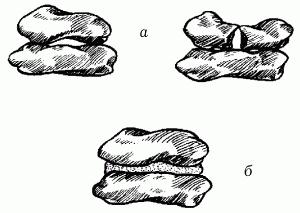
Рис. 45 Положение камней в кладке: а – опора на две точки; б – опора на всю постель.
Первое правило разрезки. Если поверхности, которыми камни соприкасаются друг с другом, перпендикулярны силе тяжести, действующей на них, кладка будет становиться плотнее.
Таким образом, постели камней располагают перпендикулярно силе, воздействующей на кладку, а камни укладывают горизонтальными рядами.
Второе правило разрезки. Камни каждого ряда укладывают таким образом, чтобы не произошел их сдвиг. Камни со скошенными боковыми поверхностями образуют в кладке клинья, которые будут раздвигать соседние камни. Для того чтобы этого не произошло, кладку выстраивают таким образом, чтобы плоскости между соседними камнями были перпендикулярны к постелям. Вместе с тем, если две боковые плоскости не будут перпендикулярны наружным поверхностям стен, а две другие боковые плоскости не будут перпендикулярны первым, камни, имеющие острые углы у наружной поверхности, могут выпасть из кладки (рис. 46).
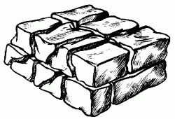
Рис. 46. Кладка, разрезанная вертикальными плоскостями камней.
Следовательно, кладку разделяют вертикальными плоскостями, параллельными ее наружной поверхности, а также плоскостями, расположенными перпендикулярно наружной поверхности.
Третье правило разрезки. Если продольные и поперечные вертикальные швы будут сквозными, получится кладка, разделенная на отдельные столбики (рис. 47).
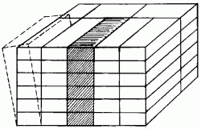
Рис. 47. Кладка без перевязки швов.
Это очень неустойчивая конструкция, в которой швы под воздействием вертикальной нагрузки будут расширяться, что рано или поздно приведет к деформации и разрушении кладки.
Для того чтобы избежать этого, поперечные и продольные камни в горизонтальных рядах перевязывают камнями вышележащего ряда, сдвигая их на половину или четверть длины относительно камней нижележащего ряда (рис. 48).
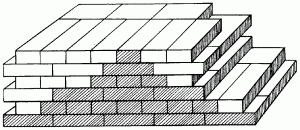
Рис. 48. Кладка с перевязкой швов.
В этом случае нагрузка будет распределяться равномерно по всей массе кладки. Таким образом, плоскости вертикальной разрезки каждого ряда должны быть сдвинуты относительно плоскостей граничащих с ними рядов.
Система перевязки кладкиКладку из кирпичей выполняют по определенной системе, которая называется перевязкой. Она позволяет получить прочную кладку с равномерным распределением нагрузки по всему ее объему, а также рационально использовать имеющийся строительный материал.
При возведении фундаментов применяют следующие виды перевязки (рис. 49):
– ложковая;
– цепная;
– крестовая.
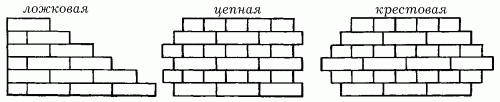
Рис. 49. Виды перевязки.
Также различают перевязку вертикальных швов, продольных и поперечных.
Перевязку продольных швов делают для того, чтобы кладка не расслаивалась на более тонкие стенки, а нагрузка равномерно распределялась по ширине стены.
Перевязка поперечных швов необходима для продольной связи между отдельными кирпичами, обеспечивающей распределение нагрузки на соседние участки кладки и монолитность стен при неравномерных осадках, температурных деформациях и т. п. Перевязку поперечных швов выполняют ложковыми и тычковыми рядами, а продольных – тычковыми.
Основными системами перевязки кирпичной кладки являются однорядная (цепная) и многорядная, а также трехрядная перевязка.
В однорядной перевязке чередуются ложковые и тычковые ряды. Поперечные швы в смежных рядах сдвинуты относительно друг друга на четверть кирпича, а продольные – на полкирпича. Все вертикальные швы нижнего ряда перекрывают кирпичами верхнего ряда (рис. 50).
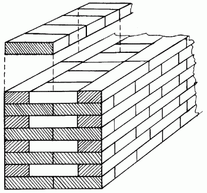
Рис. 50. Однорядная система перевязки.
В многорядной перевязке (рис. 51) кладка состоит из отдельных стенок толщиной 1/4 кирпича (120 мм), сложенных из ложков и перевязанных через несколько рядов по высоте тычковым рядом. В зависимости от размеров кирпича установлена максимальная высота ложковой кладки между тычковыми рядами для различных видов кладки: из одинарного кирпича толщиной 65 мм – один тычковый ряд на 6 рядов кладки; из утолщенного кирпича толщиной 88 мм – 1 тычковый ряд на 5 рядов кладки.
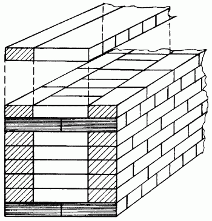
Рис. 51. Многорядная система перевязки.
При многорядной перевязке кладки из одинарного кирпича продольные вертикальные швы через каждые 5 ложковых рядов перекрывают тычковым рядом. При этом тычки могут чередоваться с ложковыми кирпичами. Поперечные вертикальные швы в четырех ложковых рядах перекрывают ложками каждого смежного ряда на половину кирпича, а швы пятого ложкового ряда – тычками шестого ряда на четверть кирпича. Такую кладку называют пятирядной.
Иногда с целью усиления перемычки кладки тычковые ряды укладывают через 3 ложковых ряда.
При использовании многорядной перевязки не полностью соблюдается третье правило разрезки кладки. При этом отсутствие перевязки продольных швов на высоту пяти рядов кладки практически не снижает ее прочности, в то же время вследствие большого термического сопротивления этих швов, расположенных на пути теплового потока, улучшаются теплотехнические показатели кладки.
Производительность труда при укладке кирпича зависит от соотношения количества кирпича в верстах и забутке, то есть от системы перевязки кладки. При пятирядной перевязке стен, например, толщиной в два кирпича, в версты укладывают в 1,3 раза меньше кирпичей, чем при цепной (однорядной). Это значительно облегчает работу каменщика, так как укладка ложковых кирпичей по шнуру-причалке производительнее, чем тычковых; проще обеспечивается точность перевязки, сокращается количество поперечных швов кладки, требующих аккуратности в работе.
Многорядная система перевязки рекомендуется как основная при возведении стен сиспользованием лицевого или других видов кирпичей.
Многорядную систему перевязки не рекомендуется применять для кладки столбов, так как из-за неполной перевязки швов они будут недостаточно прочными.
Приемы кладки кирпичаПоследовательность выполнения кирпичной кладки включает в себя 3 основных этапа.
1. Наложение раствора и укладка на него кирпича (рис. 52). Кирпич кладут на раствор на некотором расстоянии от последнего кирпича. Движение руки при опускании должно быть таким, чтобы нижняя постель кирпича выдавила раствор немного назад.
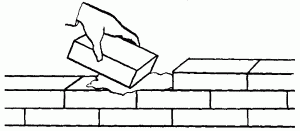
Рис. 52. Укладка кирпича на раствор.
2. Движение кирпича по раствору вперед. При этом движении тычковая сторона кирпича должна собрать на себя достаточное количество раствора для образования вертикального шва (рис. 53).
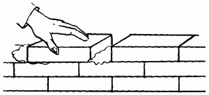
Рис. 53. Распределение раствора.
Следует убедиться в том, что раствор равномерно распределился под кирпичом.
3. Поджатие кирпича, установка его на место и удаление излишков раствора. При установке кирпича следует слегка постучать по нему мастерком.
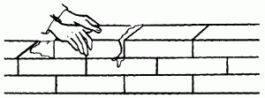
Рис. 54. Поджатие кирпича.
Расстилание и разравнивание раствора на постелиРавномерное по толщине расстилание раствора является едва ли не самым важным моментом в процессе кирпичной кладки – от этого зависит, будут ли одинаковыми обжатие и плотность раствора в кладке.
Для ложкового верстового ряда раствор расстилают в виде грядки шириной 80–100 мм, для тычкового – 200–220 мм. При кладке в пустошовку, то есть когда швы оставляют незаполненными на глубину 10 мм от наружной поверхности стены, раствор расстилают с отступом от лицевой поверхности стены на 20–30 мм. При кладке с полным заполнением швов раствор расстилают с отступом на 10–15 мм.
Толщина грядки раствора в среднем должна быть 20–25 мм. Это обеспечивает при укладке кирпича толщину шва 10–12 мм.
При кладке стен расстилают раствор под ложковые ряды через боковую грань лопаты, а под тычковые ряды – через ее передний край; растворную грядку разравнивают тыльной стороной лопаты. При укладке забутки раствор набрасывают лопатой в корыто, образованное между верстами, и разравнивают также тыльной стороной лопаты.
При кладке отдельно стоящих столбов небольшого сечения раствор подают на середину столба, а затем расстилают и разравнивают кельмой по всему ряду в процессе укладки кирпича. При кладке столбов большего сечения раствор расстилают так же, как и при возведении стен.
На участках стен с большим количеством дымовых и вентиляционных каналов раствор между каналами расстилают кельмой, причем его берут со сплошной части стены или же с внутренней версты, куда раствор подают заранее. Качество кирпичной кладки зависит не только от правильности расстилания и разравнивания раствора на постели, но и от свойств раствора. Например, известковые или смешанные цементно-известковые или цементно-глиняные растворы, обладающие большой пластичностью, легко расстилаются, разравниваются по кладке и равномерно уплотняются при укладке кирпича.
Цементные растворы менее пластичны, их труднее расстилать и разравнивать. Для повышения их пластичности в процессе приготовления рекомендуется добавлять пластифицирующие добавки.
Пластифицированные растворы медленнее расслаиваются и после нанесения на пористое основание слабо отдают воду, что обеспечивает твердение вяжущего вещества в растворах в оптимальные сроки.
Подвижность раствора для кирпичной кладки стен и столбов из обыкновенного керамического или силикатного кирпича в зависимости от способа кладки, вида и состояния кирпича характеризуется погружением эталонного конуса на 9–13 см. При кладке стен из пористо-пустотелого и пустотелого кирпича применяют раствор с подвижностью не более 7–8 см, чтобы предотвратить потери его при затекании в дыры и пустоты кирпича и избежать ухудшения теплотехнических свойств кладки. Подвижность растворов следует повышать за счет введения пластифицирующих добавок до погружения конуса на 12–14 см при кладке из сухого кирпича в жаркую погоду.
Непосредственно перед подачей любой раствор необходимо перемешать, так как за то время, пока он лежит в ящике, тяжелые частицы (песок) оседают, происходит расслоение раствора и он становится неоднородным.
Способы кладкиКладку верст ведут тремя способами: вприжим, вприсык и вприсык с подрезкой раствора, а забутки – вполуприсык. Выбор способа кладки зависит от пластичности раствора, состояния кирпича (сухой или влажный), времени года и требований к чистоте лицевой стороны кладки. Способом вприжим (рис. 55) выкладывают стены из кирпича на жестком растворе (осадка конуса 7–9 см) с полным заполнением и расшивкой швов. Этим способом укладывают как ложковые, так и тычковые версты.
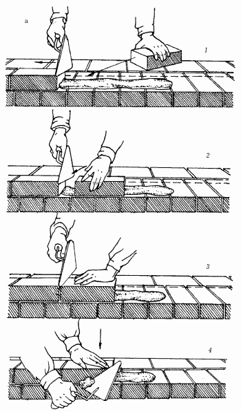
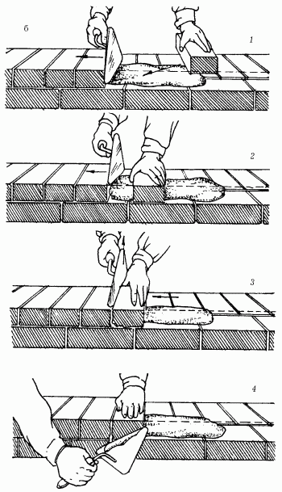
Рис. 55. Кладка кирпичей способом вприжим: а – ложкого ряда; б – тычкового ряда; 1–4 – последовательность действий.
При этом раствор расстилают с отступом от лица стены на 10–15 мм. Разравнивают раствор тыльной стороной кельмы, перемещая ее от уложенного кирпича и устраивая растворную постель одновременно для трех ложковых или пяти тычковых кирпичей.
Кладку вприжим выполняют в следующем порядке. Держа в правой руке кельму, разравнивают ею растворную постель, затем ребром кельмы подгребают часть раствора и прижимают его к вертикальной грани ранее уложенного кирпича, а левой рукой подносят новый кирпич к месту укладки. После этого опускают кирпич на подготовленную постель и, двигая его левой рукой к ранее уложенному кирпичу, прижимают к полотну кельмы.
Движением вверх правой руки вынимают кельму, а кирпичом, придвигаемым левой рукой, зажимают раствор между вертикальными гранями укладываемого и ранее уложенного кирпича. Нажимом руки осаживают уложенный кирпич на растворной постели. Избыток раствора, выжатый из шва на лицо кладки, подрезают кельмой за 1 прием после укладки тычками каждых 3–5 кирпичей или после укладки ложками двух кирпичей.
Раствор каменщик набрасывает на растворную постель. Кладка получается прочной, с полным заполнением швов, плотной и чистой. Однако этот способ требует большего количества движений, чем другие, и поэтому считается наиболее трудоемким.
Способом вприсык (рис. 56) ведут кладку на пластичных растворах (осадка конуса 12–13 см) с неполным заполнением швов раствором по лицу стены, то есть впустошовку. Процесс кладки ложкового ряда при этом способе выполняют в следующем порядке. Взяв кирпич и держа его наклонно, загребают тычковой гранью кирпича часть раствора, предварительно разостланного на постели.
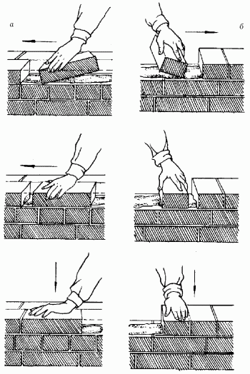
Рис. 56. Кладка способом вприсык: а – ложковго ряда; б – тычкового ряда.
Загребать раствор начинают примерно на расстоянии 8–12 см от ранее уложенного кирпича. Придвигая кирпич к ранее уложенному, постепенно выправляют его положение и прижимают к постели. При этом часть раствора, снятая с постели, заполняет вертикальный поперечный шов. Уложив кирпич, осаживают его рукой на растворной постели. При кладке тычкового ряда процесс укладки выполняют в той же последовательности, что и ложкового, только раствор для образования вертикального поперечного шва подгребают не тычковой, а ложковой гранью. Этим способом кирпич можно укладывать как левой, так и правой рукой.
Для кладки кирпича способом вприсык раствор расстилают грядкой с отступом от наружной вертикальной поверхности на 20–30 мм, чтобы при кладке раствор не выжимался на лицевую поверхность кладки.
Способ вприсык с подрезкой раствора применяют при возведении стен с полным заполнением горизонтальных и вертикальных швов и с расшивкой швов. При этом раствор расстилают так же, как и при кладке вприжим, то есть с отступом от лица стены на 10–15 мм, а кирпич укладывают на постель так же, как при кладке вприсык.
Избыток раствора, выжатый из шва на лицо стены, подрезают кельмой, как при кладке вприжим. Раствор для кладки применяют более жесткий, чем для кладки без подрезки, подвижностью 10–12 см. При чрезмерной пластичности раствора каменщик не будет успевать срезать его при выдавливании из швов кладки. На выполнение кладки вприсык с подрезкой раствора затрачивается больше времени и труда, чем на укладку вприсык, но меньше, чем на кладку вприжим.
Способом вполуприсык выкладывают забутку (рис. 57). Для этого сначала между внутренней и наружной верстами расстилают раствор. Затем разравнивают его, после чего укладывают кирпич в забутку.
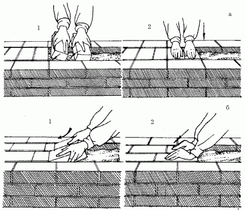
Рис. 57. Кладка забутки способом вполуприсык: а – тычками; б – ложками; 1–2 – последовательность действий.
Процесс кладки забутки несложен. Кирпич при кладке держат почти плашмя, на расстоянии 6–8 см от ранее уложенного, постепенно опуская кирпич на растворную постель, загребают ребром незначительное количество раствора, придвигают кирпич вплотную к ранее уложенному и нажимом руки осаживают его на место.
Вертикальные швы остаются при этом частично незаполненными. Их заполняют при расстилании раствора для кладки следующего по высоте ряда, причем каменщик следит за тем, чтобы поперечные швы между кирпичами заполнялись полностью.
Кирпич забутки плотно прижимают к постели, чтобы верхняя поверхность уложенных в забутку кирпичей была на одном уровне с верстовыми.
Виды расшивкиДля придания наружной поверхности кладки четкого рисунка и уплотнения раствора в швах их расшивают. В этом случае кладку ведут с подрезкой раствора, а швам придают различную форму: прямоугольную заглубленную, с выпуклостью наружу или вогнутую внутрь, треугольную двухсрезную, применяя расшивки с рабочей частью различных очертаний.
Расшивки вогнутой формы применяют для получения выпуклых швов, а круглого сечения – для получения вогнутых швов. Швы расшивают до схватывания раствора, так как в этом случае процесс менее трудоемок, а качество швов лучше.
При этом сначала протирают поверхность кладки ветошью или щеткой от набрызгов раствора, затем расшивают вертикальные швы (6–8 тычков или 3–4 ложка), после чего – горизонтальные.
Последовательность кладкиУкладку рядов кирпича следует начинать с наружной версты. Кладку любых конструкций и их элементов (стен, столбов, обрезов, напусков), а также укладку кирпича под опорными частями конструкций, независимо от системы перевязки, начинают и заканчивают тычковым рядом.
Кладка может осуществляться порядным, ступенчатым и смешанным способами. Последовательность кладки показана на рис. 58.
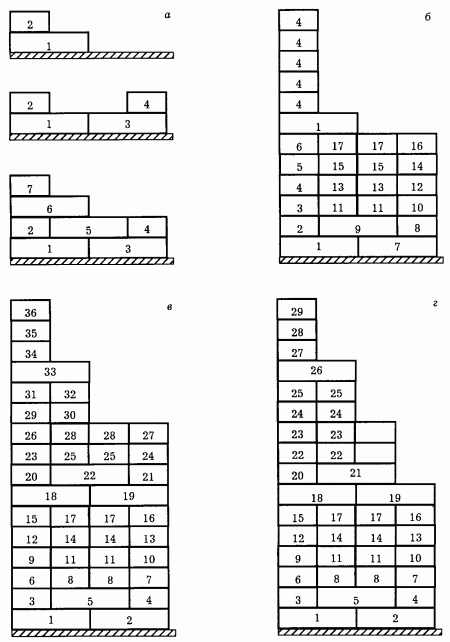
Рис. 58. Последовательность кладки кирпича: а – однорядная система перевязки; б – многорядная система перевязки; в, г – многорядная система перевязки смешанным способом.
Порядный способ с одной стороны очень простой, с другой – трудоемкий, так как кладку каждого последующего ряда можно начинать лишь после укладки верст и забутки предыдущего.
Этот способ применяют преимущественно при кладке по однорядной системе перевязки. Однако чтобы облегчить труд, рекомендуется следующий порядок: после укладки тычковых кирпичей наружной версты укладывают ложковые кирпичи 2-го ряда наружной версты, затем внутренние версты и забутку.
В этом случае реже приходится переключаться с наружных верст на внутренние, чем при кладке сначала полностью одного ряда, а затем другого.
Ступенчатый способ состоит в том, что сначала выкладывают тычковую версту 1-го ряда и на ней наружные ложковые версты от 2-го до 6-го ряда. Затем кладут внутреннюю тычковую версту ряда и порядно пять рядов внутренней версты и забутки. Максимальная высота ступени при этой последовательности составляет шесть рядов. Этот способ рекомендуется при многорядной перевязке кладки.
Смешанным способом выкладывают стены при многорядной перевязке. Первые 7–10 рядов кладки выкладывают порядно. При высоте кладки 0,6–0,8 м, начиная с 8–10 рядов, рекомендуется применять ступенчатый способ кладки, так как продолжать кладку порядным способом, особенно при толщине стен в два кирпича и больше, становится трудно.
В этом случае, выкладывая верхние ряды наружных верст, можно опираться на нижние ступени кладки, что значительно облегчает работу.
Кладка стен и угловКладку из кирпича начинают с закрепления угловых и промежуточных порядовок (рис. 59). Их устанавливают по периметру стен и выверяют по отвесу и уровню или нивелиру так, чтобы засечки для каждого ряда на всех порядовках находились в одной горизонтальной плоскости.
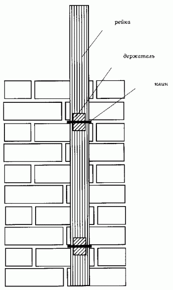
Рис. 59. Крепление порядовки к кладке.
Порядовки располагают на углах, в местах пересечения и примыкания стен, а также на прямых участках стен на расстоянии 10–15 см друг от друга.
После закрепления и выверки порядовок по ним выкладывают маяки (убежные штрабы), располагая их на углах и на границе возводимого участка (рис. 60). Затем к порядовкам зачаливают шнуры-причалки.
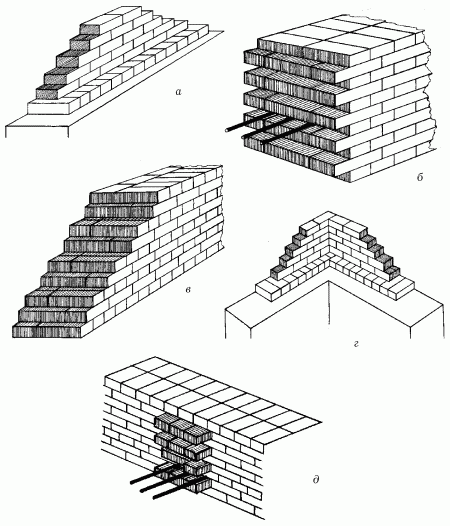
Рис. 60. Штрабы: а – вертикальная на прямом участке; б – убежная; в – убежная промежуточная (маяк); г – вертикальная в месте примыкания другой стены; д – убежная угловая (маяк).
При кладке наружных верст шнур-причалку устанавливают для каждого ряда, натягивая его на уровне верха укладываемого ряда с отступом от вертикальной плоскости кладки на 3–4 мм (рис. 61). Шнур-причалку у маяков можно укреплять и с помощью причальной скобы, острый конец которой вставляют в шов кладки, а к тупому, более длинному концу, опирающемуся на маячный кирпич, привязывают причалку.
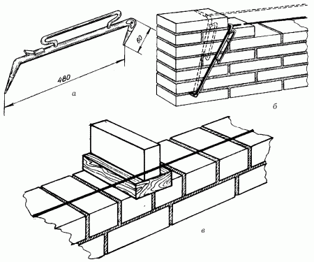
Рис. 61. Установка причального шнура: а – причальная скоба; б – перестановка скобы; в – предупреждение провисания шнура.
Свободную часть шнура наматывают на ручку скобы. Поворотом скобы в новое положение получают линию натяжения шнура-причалки для следующего ряда. Чтобы причальный шнур не провисал между маяками, под него подкладывают деревянный маячный клин, толщина которого равна высоте ряда кладки, а поверх него кладут кирпич, которым прижимают шнур. Маячные клинья укладывают через 4–5 м с выступом за вертикальную плоскость стены на 3–4 мм. Шнур-причалку можно укреплять также, привязывая его за гвозди, закрепляемые в швах кладки.
Дальнейший процесс возведения кладки зависит от принятого порядка кладки: порядного, ступенчатого или смешанного.
В процессе кладки необходимо соблюдать следующие общие требования и правила.
1. Стены и простенки следует выполнять по единой системе перевязки швов – многорядной или однорядной (цепной). Для кладки столбов, а также узких простенков (шириной до 1 м) внутри зданий следует применять трехрядную систему перевязки швов. Тычковые ряды в кладке должны укладываться из целых кирпичей.
2. Независимо от принятой системы перевязки швов укладка тычковых рядов является обязательной в нижнем (первом) и верхнем (последнем) рядах возводимых конструкций, на уровне обрезов стен и столбов, в выступающих рядах кладки (карнизах, поясах и т. д.).
3. При многорядной перевязке швов укладка тычковых рядов под опорные части балок, прогонов, плит перекрытий, балконов и других сборные конструкции является обязательной. При однорядной (цепной) перевязке швов допускается опирание сборных конструкций на ложковые ряды кладки.
4. Применение половинок кирпича допускается только в кладке забутовочных рядов и нагруженных каменных конструкций (участки стен под окнами и т. п.).
5. Горизонтальные и поперечные вертикальные швы кирпичной кладки стен, а также все швы (горизонтальные, поперечные и продольные вертикальные) в перемычках, простенках и в столбах должны быть заполнены раствором, за исключением кладки впустошовку.
6. При использовании неполномерных кирпичей, необходимо укладывать их отколотой стороной внутрь кладки, а целой наружу.
7. При возведении с использованием однорядной (цепной) перевязки прямых стен, имеющих по толщине нечетное число полукирпичей (например, полтора), первую – наружную версту 1-го ряда укладывают тычковыми кирпичами, а вторую – ложковыми. При кладке стен, имеющих по толщине четное число полукирпичей, например, два, 1-й ряд начинают с укладки тычков по всей ширине стены, во 2-м ряду верстовые кирпичи кладут ложками, забутку – тычками.
8. При кладке стен большей толщины в верстовых рядах во 2-м ряду над тычками кладут ложки, а над ложками – тычки. Забутку во всех рядах выполняют тычками.
9. Вертикальное ограничение (ровный обрез стены по вертикальной плоскости) при кладке при однорядной системе перевязки получают, укладывая в начале стены трехчетвертки. При возведении стены в полкирпича в ее начале ставят через один ряд половинки. Для закладки вертикального ограничения стены в один кирпич в ложковом ряду в начале ее располагают в продольном направлении две трехчетвертки, а в тычковом ряду, как обычно, – целый кирпич. В тычковом ряду в начале стены в углах располагают трехчетвертки в поперечном направлении, в ложковом – три трехчетвертки в продольном направлении стены.
Кладка угловКладка углов стен – наиболее ответственная работа, для выполнения которой нужен достаточный опыт.
Первый тычковый ряд одной из стен, составляющих прямой угол, начинают от наружной поверхности другой стены трехчетвертками; 1-й ряд второй стены присоединяют к 1-му ряду первой стены. Во втором ряду кладка идет в обратной последовательности, то есть кладку 2-го ряда второй стены начинают от наружной поверхности первой стены трехчетвертками. В результате ложковые ряды одной стены выходят тычками на лицевую поверхность другой.
Стена, доходящая до лицевой поверхности другой стены, должна заканчиваться трехчетвертками, расположенными продольно. Пропускают наружные ложковые ряды, примыкают наружные тычковые. При такой схеме раскладки кирпича углы выкладывают без четверток, но со значительно большим количеством трехчетверток.
Примыкание стен при однорядной системе перевязки выполняют следующим образом. В 1-м ряду кладку примыкающей стены пропускают через основную стену до ее лицевой поверхности и заканчивают тычками и трехчетвертками, если для соблюдения перевязки применяются трехчетвертки и четвертки, либо пропускаемую кладку заканчивают одними трехчетвертками. Во втором ряду к ложкам основной стены примыкает ряд сопрягаемой стены.
Пересечение стен при цепной системе перевязки выполняют попеременно, пропуская ряды кладки одной стены через другую.
При многорядной перевязке 1-й ряд выкладывают так же, как и при однорядной, тычками. При толщине стены, кратной целому кирпичу, во 2-м ряду наружную и внутреннюю версты выкладывают ложками, а забутку – тычками. При толщине стены, кратной нечетному числу кирпичей, 1-й ряд выкладывают тычками на фасад, а ложками внутрь помещения; 2-й ряд, наоборот, ложками на фасад, а тычками внутрь (рис. 62).
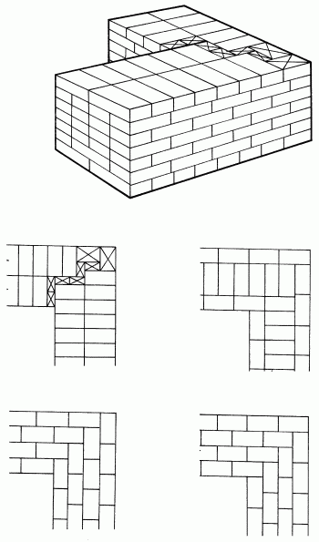
Рис. 62. Кладка угла стены при многорядной перевязке.
Последующие 3–6-й ряды выкладывают только ложками с перевязкой вертикальных поперечных швов на половину или четверть кирпича.
При кладке нагруженных стен на участках под окнами при заполнении каркасных стен допускается использование в забутке половинок и кирпичного боя.
Вертикальное ограничение стены получают, выкладывая первые два ряда с применением трехчетверток в начале 1 и 2 рядов. В остальных ложковых рядах неполномерные кирпичи у ограничений чередуют с целыми, кирпич раскладывают так, чтобы ложки перекрывали друг друга на полкирпича.
Прямые углы выкладывают с применением трехчетверток и четверток. Начинают кладку угла с двух трехчетверток, каждую из которых кладут ложком в наружную версту соответствующей сопрягаемой стены.
Промежуток, образующийся между трехчетвертками и тычковыми кирпичами, заполняют четвертками. Во 2-м ряду версты выполняют ложками, а забутку – тычками. Кладку следующих ложковых рядов ведут с перевязкой вертикальных швов. Примыкания внутренних стен к наружным при неодновременном возведении их можно выполнять в виде вертикальной многорядной или однорядной штрабы. В этих случаях в наружные стены для укрепления кладки закладывают три стальных стержня диаметром 8 мм, которые располагают не реже чем через 2 м по высоте кладки, а также в уровне каждого перекрытия. Они должны иметь длину не менее 1 м от угла примыкания и заканчиваться анкером.
Часто кладку наружной стены выполняют из керамического кирпича толщиной 65 мм или кирпича (камней) толщиной 138 мм, а кладку внутренних стен – из утолщенного кирпича толщиной 88 мм. При этом примыкание внутренних стен к наружным перевязывают через каждые три ряда кирпичей толщиной 88 мм.
Тонкие, в полкирпича или один кирпич, стены внутри зданий кладут после наружных капитальных. Для присоединения их к капитальной стене устраивают паз, в который заводят тонкую стену.
Существует и иной способ сопряжения, когда паз не оставляют, а в швы капитальной стены в процессе кладки для связи с примыкающими стенами закладывают стержни арматуры.
Кладка выступов стенЭту кладку выполняют по однорядной или многорядной системе перевязки, если ширина пилястры четыре кирпича и более, а при ширине пилястры до 1/2 кирпича по трехрядной системе перевязки, как кладку столбов. При этом для перевязки выступа с основной стеной используют, в зависимости от размера пилястры, неполномерные или целые кирпичи, применяя способы раскладки, рекомендуемые для перевязки примыканий (пересечений) стен (рис. 63).
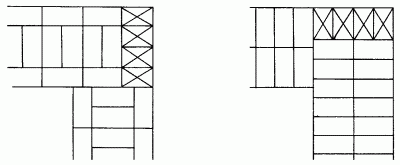
Рис. 63. Кладка угла стены при двухрядной перевязке.
Кладка стен с нишамиКладку стен с нишами (например, для размещения приборов отопления), выполняют с применением тех же систем перевязки, что и для сплошных участков. При этом ниши сооружают, прерывая в соответствующих местах внутреннюю версту, а в местах углов ниши для связи их со стеной укладывают неполномерные и тычковые кирпичи.
Кладка стен с каналамиПри кладке стен приходится одновременно устраивать в них газоходы, вентиляционные и другие каналы. Их размещают, как правило, во внутренних стенах здания, в стенах толщиной 38 см – в один ряд, а в стенах толщиной 64 см – в два ряда. Сечение каналов обычно бывает 140 х 140 мм (1/4 х 1/4 кирпича), а дымовых каналов больших печей и плит – 270 х 140 мм (1 х 1/4 кирпича) или 270 х 270 мм (1 х 1 кирпич).
Газовые и вентиляционные каналы в стенах из кирпича, полнотелых и пустотелых бетонных блоков выкладывают из керамического полнотелого кирпича с соответствующей перевязкой кладки канала с кладкой стены (рис. 64, 65).
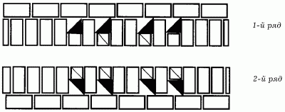
Рис. 64. Каналы в стенах толщиной 1,5 кирпича.
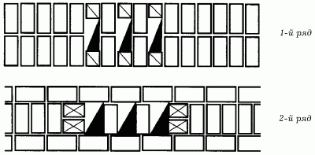
Рис. 65. Каналы в стенах толщиной в 2 кирпича.
Толщина стенок каналов должна быть не менее полкирпича; толщина перегородок (рассечек) между ними – не менее четверти кирпича.
Каналы делают вертикальными. Допускают отводы каналов на расстояние не более 1 м и под углом не менее 60° к горизонту. Сечение канала на участке увода, измеряемое перпендикулярно оси канала, должно быть одинаково с сечением вертикального канала. Кладку наклонных участков выполняют из отесанных под определенным углом кирпичей, остальных участков – из целых кирпичей.
Дымовые и вентиляционные каналы выкладывают на тех же растворах, что и внутренние стены здания. В малоэтажных зданиях дымовые трубы выкладывают на глино-песчаном растворе, состав которого определяют в зависимости от жирности глины.
Во всех местах, где деревянные части подходят близко к дымовым каналам (дымовым трубам), устраивают разделки из несгораемых материалов (кирпича, асбеста) и увеличивают толщину стенок канала. Такую же разделку делают там, где конструкции приближены к вентиляционным каналам, проходящим рядом с дымовыми. Разделки между деревянными конструкциями здания (балками перекрытий) и дымовым каналом, то есть внутренней поверхностью газохода, должны быть не менее 38 см, если балки не защищены от возгорания, и не менее 25 см, если они защищены.
Участки кирпичных стен с каналами выкладывают, предварительно разметив их на стене по шаблону – доске с вырезами, соответствующими расположению и размерам каналов на стене. Этим же шаблоном периодически проверяют правильность размещения каналов.
При возведении стен в каналы вставляют инвентарные буйки в виде пустотелых коробок из досок или другого материала. Сечение буйка должно равняться размерам канала, а высота – 8–10 рядам кладки. Применение буйков обеспечивает правильность формы каналов и предохраняет их от засорения, при этом лучше заполняются швы. При возведении стен буйки переставляют через 6–7 рядов кладки. Швы кладки каналов должны быть хорошо заполнены раствором. По мере возведения кладки шов затирают, используя для этого швабровку. Делают это при перестановке буйков. Смачивая поверхности каналов водой, растирают швабровкой наплывы раствора и заглаживают швы. В результате на поверхности кладки остается меньше шероховатостей, на которое может оседать сажа.
После окончания кладки каналы проверяют, пропуская через них шар диаметром 80–100 мм, привязанный к шнуру. Место засорения канала определяют по длине опущенного в него шнура с шаром.
Кладка стен при заполнении каркасовТакие стены выкладывают с применением тех же систем перевязки и приемов труда, что и при кладке обычных стен.
Крепление кладки к каркасу выполняют в соответствии с проектом. Обычно для этого укладывают в швы кладки стержни арматуры и прикрепляют их к закладным деталям каркаса.
Кладка столбиков под лагиПри устройстве дощатого пола первого этажа между грунтом и полом делают подполье, предохраняющее пол от грунтовой сырости.
Доски пола настилают по лагам, укладываемым на кирпичные столбики сечением в один кирпич. Применение силикатного кирпича и искусственных камней, прочность которых уменьшается при увлажнении, не допускается.
Столбики устанавливают на плотный грунт или на бетонное основание. На насыпном грунте их ставить нельзя, так как из-за возможной осадки хотя бы одного-двух столбиков пол провиснет и будет зыбким.
Столбики, возведенные на грунте, должны быть выше уровня грунта в подполье на 2 ряда кладки.
До начала кладки размечают места установки столбиков, причем крайние ряды столбиков, по которым будут уложены лаги вдоль стен, устанавливают к ним вплотную, а крайние столбики каждого ряда – с отступом на полкирпича. Кладку столбиков с однорядной перевязкой лучше выполнять вдвоем. Один человек подготавливает место, раскладывает кирпич и подает раствор, другой ведет кладку. Верх столбиков должен располагаться на одном уровне, соответственно заданной отметке. Кладку проверяют двухметровой рейкой и уровнем, которые прикладывают к столбикам во всех направлениях.
Приемы кладки бутового камняКладку бутового камня выполняют по тем же правилам, что и кирпичную, включая системы перевязки и расположение швов.
Кладка из бутового камня требует подбора и сортировки камня, а кладка из булыжника может дополнительно потребовать и дробления.
В том случае, если кладку производят из булыжника, на лицевую сторону кладки лучше всего выводить камни лицевой некотолотой стороной.
Для кладки бутового камня предпочтительнее более плоские глыбы. Обязательно следует соблюдать следующее правило: камни в кладке следует располагать так, как они находились в природе. Это можно определить по тем слоям, которые есть у многих видов естественных камней.
Слоистые камни не рекомендуется укладывать на ребро, их располагают в кладке с горизонтальной ориентацией слоев. При кладке из колотого бутового камня швам стараются придать горизонтальное положение.
Существует несколько видов кладки бутового камня:
– классическая;
– мозаичная;
– комбинированная;
– кладка из булыжника.
Классическая кладка проста в исполнении, не занимает много времени, однако требует больших подготовительных работ, таких как обтесывание камней (рис. 66).
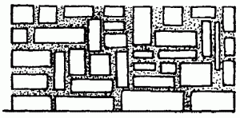
Рис. 66. Классическая кладка бутового камня.
Кладка из булыжника (рис. 67) ведется без подготовительных работ, однако требует больше времени для подбора камней. Этот вид кладки в основном используют в декоративных целях, для фундаментов он не годится.
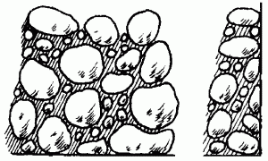
Рис. 67. Кладка из булыжников.
Для мозаичной кладки камни предварительно подбирают по форме и тщательно укладывают, соблюдая одинаковую толщину шва. Этот вид кладки в основном используется для возведения цоколей (рис. 68).
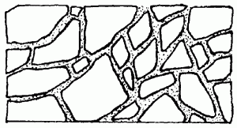
Рис. 68. Мозаичная кладка из бутового камня.
Комбинированную кладку из бутового камня (рис. 69) часто сочетают с кирпичной кладкой или бетонной стеной. При этом каменная кладка должна быть связана с кирпичной с помощью перевязки.
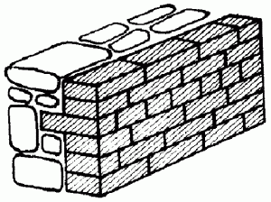
Рис. 69. Комбинированная кладка.
Для соединения с бетонной или кирпичной стеной устанавливают проволоку, куски арматуры или металлические штыри, концы которых замуровываются в каменную кладку.
При строительстве частных домов часто используют сочетание кладок (рис. 70). Например, классическая кладка стены дома из колотого камня сочетаются с мозаичной кладкой цоколя, а цоколь одновременно является стеной подвала.
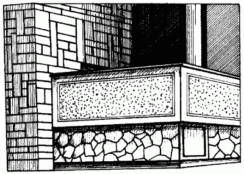
Рис. 70. Сочетание кладок.
Виды кладки из бутового камняИзвестны 4 вида кладки из бутового камня:
1. Под лопатку.
2. Под скобу.
3. Под залив.
4. С виброуплотнением.
Кладку первого вида ведут горизонтальными рядами толщиной не более 25 см. Сначала выполняют приколку камня, заполнение пустот щебенчатым раствором и перевязку швов. Толщина шва должна быть не более 15 мм и по всей длине ряда одинаковой, но сами ряды могут иметь разную толщину. Самый нижний ряд выполняют насухо, без применения раствора. Камни для этого требуются преимущественно крупные, направленные постелью вниз. Второй и последующие ряды выкладывают следующим образом: каждый камень ставят в свежеуложенный раствор, осаживая его с помощью трамбовки. Пустоты между камнями заполняют мелким щебнем, заливая его затем жидким раствором.
Кладку «под лопатку» ведут так: сначала укладывают верстовые камни. До возведения внутренней и наружной поверхности кладки на пересечениях и через каждые 4 м прямых стен устанавливают маяки, по которым с двух сторон кладки натягивают причальные шнуры. С их помощью по мере подъема кладки проверяют прямолинейность наружной стороны фундамента или стены.
Для определения устойчивости камней первого ряда их кладут насухо без раствора, после чего заливают слой раствора, предварительно приподняв камень, а затем слегка осадив его постукиванием молотка.
После кладки верст начинают заполнять забутку, или середину фундамента. Раствор в забутку кладут лопатой. Его должно быть столько, чтобы при укладке камней избыток раствора просачивался в вертикальные и горизонтальные швы среди камней. При возведении забутки следует соблюдать перевязку швов, то есть периодически менять тычки с ложками. Одновременно камни осаживают молотком или трамбовкой. Нужно следить за тем, чтобы камни без раствора между собой не соприкасались, поскольку это приведет к снижению прочности кладки.
После возведения забутки приступают к расщебенке кладки. С помощью молотка слегка постукивают по камням, в результате чего щебень с раствором заполняет все пустоты между ними. Затем каждый уложенный ряд ровняют. Таким образом выкладывают все последующие ряды.
Кладку «под скобу» выполняют при строительстве столбов и простенков. В этом случае камни подбирают одинакового размера, используя шаблон (рис. 71). Кладка «под скобу» – разновидность кладки «под лопатку».
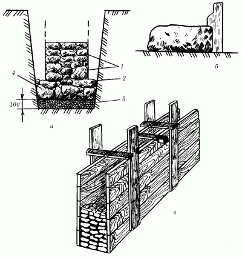
Рис. 71. Виды бутовой кладки: а – под лопатку; б – под скобу; в – под лопатку с приколкой лицевой поверхности; 1 – перстовые камни; 2 – раствор; 3 – щебеночное основание; 4 – постелистые камни.
Другая разновидность кладки «под лопатку» – это кладка с приколкой лицевой поверхности. Ее характерной особенностью является то, что все неровности на лицевой поверхности предварительно окалываются перед укладкой в наружную или внутреннюю версту. Этот вид кладки поверхности используют при сооружении стен подвалов.
Кладка «под лопатку» в опалубке дает возможность получить гладкую поверхность, если поверхность камней не вполне ровная. При таком способе кладки нет необходимости делать верстовые ряды и углы.
Для кладки «под залив» применяют камни с рваной поверхностью, без определенного подбора и кладки верстовых рядов. При плотном грунте глубина траншеи достигает 1,25 м, кладку ведут без опалубки враспор со стенками траншеи (рис. 72). Применяют кладку «под залив» при возведении фундаментов в непросадочных грунтах.
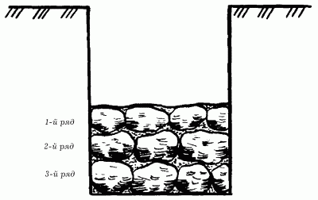
Рис. 72. Кладка бутового камня враспор со стенками траншеи.
Кладку «под залив» чаще всего применяют при возведении зданий высотой не менее двух этажей. Для этого в заранее подготовленном котловане с отвесными стенками тщательно выравнивают основание, сверху укладывают щебень слоем не менее 10 см. На щебень насухо выкладывают 30-сантиметровый слой бутового камня, после чего выполняют расщебенку и заливают все жидким раствором. Все последующие слои укладывают на растворе.
Кладка с виброуплотнением считается более прочной по сравнению с кладкой «под лопатку». Выполняют ее следующим образом: первый ряд выкладывают насухо, затем заполняют пустоты между камнями щебнем, заливают раствором и устанавливают вибратор для уплотнения кладки. Вибрацию продолжают до тех пор, пока не прекратится впитывание раствора в кладку.
Следующий ряд кладки выполняют способом «под лопатку», после чего снова устанавливают вибратор.
Кладку с использованием виброуплотнения делают враспор со стенками траншеи или в опалубке в непросадочных грунтах.
При возведении цоколя иногда возникает необходимость выполнить декоративную поверхность. Для этого можно использовать циклопическую кладку, для выполнения которой требуются околотые камни. Их располагают в верстовых камнях, с помощью раствора придают швам выпуклость и расшивают их (рис. 73).
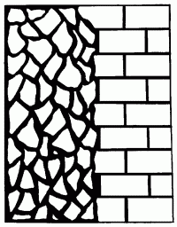
Рис. 73. Циклопическая кладка.
Приемы возведения бутобетонных и бутовых фундаментовПеред возведением фундамента прежде всего проводят подготовительные работы на строительном участке: подготавливают камни, ящики для раствора, желоба, по которым спускают камень и раствор.
Возведение бутовых фундаментов способом «под лопатку»На бровке траншей глубиной 1,25 м расставляют ящики для раствора на расстоянии 4–5 м друг от друга. Бутовые камни укладывают между ящиками раствора. В процессе кладки камни подают помощнику непосредственно в руки, а не кидают вниз.
Запасы камня, щебня для кладки фундаментов в котлованах и траншеях глубиной больше 1,25 м кладут рядом с бровкой траншеи, ящики для раствора ставят в траншее на кладку.
Растворный ящик заполняют через лотки, расположенные под углом 40–45°, тогда раствор плавно опускается в ящик. Камни в траншею опускают по желобу сечением 40 х 40 см.
Для того чтобы вести контроль за правильностью кладки, через каждые 20 м устанавливают деревянные шаблоны, соответствующие профилю фундамента. На шаблоны наносят разметку рядов кладки, по которым натягивают причальные шнуры.
Каменные работы в зимних условияхКладка камня или кирпича в зимнее время имеет свои особенности. Твердение цементного раствора происходит при взаимодействии зерен цемента с водой, при этом образуется цементный гель, превращающийся затем в камень. С понижением температуры процесс твердения цементного раствора замедляется. Например, при температуре 5 °C прочность его нарастает в 3–4 раза медленнее, чем при температуре 20 °C, а при понижении температуры до 0 °C твердение раствора практически прекращается совсем.
Известковый раствор твердеет вследствие кристаллизации гидрата окиси кальция, испарения избытка влаги и частичной карбонизации извести (при поглощении углекислого газа из воздуха). Для твердения необходимо, чтобы известь находилась во влажной среде. Наращивание прочности известкового раствора также зависит от температуры окружающей среды.
При отрицательной температуре (ниже 0 °C) в растворе происходят процессы, которые отражаются на его структуре и прочности. Во-первых, при замерзании раствора содержащаяся в нем свободная вода превращается в лед, который не вступает в химическое взаимодействие с вяжущими веществами. Если твердение вяжущего не началось до замерзания, то оно не начнется и после замерзания; если же оно уже началось, то практически приостанавливается до тех пор, пока свободная вода будет находиться в растворе в виде льда. Во-вторых, замерзающая в растворе вода значительно увеличивается в объеме (приблизительно на 10 %); вследствие этого структура раствора разрушается и он частично теряет накопленную до замерзания прочность.
При быстром замерзании свежевыложенной кладки в швах образуется смесь вяжущего вещества и песка, сцементированная льдом. Раствор настолько быстро теряет пластичность, что горизонтальные швы остаются недостаточно уплотненными; при оттаивании они обжимаются тяжестью вышележащей кладки, что может вызвать значительную и неравномерную осадку и создать угрозу прочности и устойчивости кладки.
При раннем замораживании кладки конечная прочность цементных, цементно-известковых и цементно-глиняных растворов, которую они приобретают после оттаивания и 28-суточного твердения при положительной температуре, значительно снижается и в некоторых случаях не превышает 50 % марочной прочности. Эти обстоятельства обусловливают необходимость соблюдения определенного режима зимней кладки, который обеспечил бы прочность раствора и кладки в целом.
При возведении каменных конструкций в зимних условиях систематически контролируют качество раствора и дозировку добавок. В зависимости от вида кладки и возводимых конструкций каменные работы зимой выполняют следующими способами:
– замораживанием;
– с использованием противоморозных добавок.
Кладка каменных конструкций в зимних условиях должна выполняться на цементных, цементно-известковых или цементно-глиняных растворах.
Кладка кирпича способом замораживанияСпособ замораживания сводится к следующему. Раствор, имеющий положительную температуру на момент укладки, вскоре замерзает и твердеет в основном весной после того, как кладка оттает (хотя, конечно, некоторое затвердевание происходит и сразу же после укладки за счет разницы температур раствора и воздуха), а также в период зимних и весенних оттепелей или в случае искусственного обогрева кладки.
Температура раствора во время осуществления кладки не должна быть ниже: 5 °C, при температуре воздуха -10 °C; 10 °C при температуре воздуха от -10 до -20 °C; 15 °C при температуре воздуха ниже -20 °C. Для того чтобы температура раствора не успела опуститься ниже необходимой, кладку приходится осуществлять в сжатые сроки – раствор должен быть израсходован в течение 20–30 минут.
Нельзя использовать замерзший и разбавленный после этого горячей водой раствор – добавление воды приводит к образованию в растворе большого количества пор, заполненных льдом. Раствор в швах приобретает рыхлость при оттаивании и не набирает необходимой прочности.
Для того чтобы швы в кладке были обжаты как можно лучше, раствор расстилают на постели короткими грядками – под два ложковых кирпича в верстах и под 5–6 кирпичей в забутовочном ряду. Кирпич нужно укладывать на растворные грядки как можно быстрее, а саму кладку стараться скорее возводить в высоту. Делается это для того, чтобы раствор в нижних рядах уплотнялся под нагрузкой вышележащих рядов до момента его замерзания – это увеличивает прочность и плотность кладки.
Толщина швов не должна превышать размеров, установленных для летней кладки. Это требование обусловлено следующими причинами: зимняя кладка замерзает в течение 1–2 часов, а обжатие незатвердевшего раствора происходит после полного оттаивания кладки. При оттаивании кладка, имеющая большую толщину швов, может дать значительную осадку и даже разрушиться.
При осуществлении кладки способом замораживания необходимо периодически внимательно проверять ее вертикальность – отклонения стен от вертикали могут привести к еще большему их искривлению и разрушению при весеннем оттаивании раствора.
К моменту наступления перерыва в работе все вертикальные ряды верхнего ряда кладки должны быть заполнены раствором. На время перерыва кладку необходимо накрыть (толем, матами и т. п.), а перед возобновлением работы очистить от наледи, снега и замерзшего раствора.
В углах и местах соединения поперечных и внутренних стен на уровне перекрытий укладывают стальные связи (рис. 74).
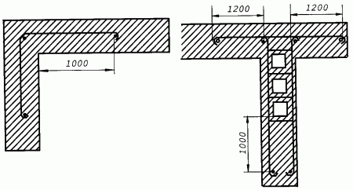
Рис. 74. Укладывание стальных связей в углу и примыкание внутренней стены к наружной.
Если здание имеет высоту до четырех этажей, связи устанавливают через этаж. При возведении более высоких зданий, а также в случае, если высота этажа превышает 4 м, связи устанавливают на уровне каждого перекрытия. Связи заводят в примыкающие стены на 1–1,5 м и заканчивают на концах анкерами.
Ведя колодцевую кладку, лучше удвоить количество армированных швов и повысить проектную марку раствора на 1–2 ступени по сравнению с предусмотренной в летних условиях.
Если ведется кладка стен облегченной конструкции, пустоты в них необходимо заполнять шлакобетонными вкладышами, шлакобетоном с малым содержанием воды или сухими засыпками без смерзшихся комьев. Это поможет избежать осадки засыпки и ухудшения теплотехнических качеств кладки.
Кладка на растворах с химическими добавкамиПри введении в растворы с цементным вяжущим химических противоморозных добавок температура замерзания воды, содержащейся в растворе, понижается. Добавки также ускоряют химический процесс твердения цемента. Благодаря этим факторам раствор накапливает прочность при более низких температурах, чем обычно. В качестве химических добавок в растворы вводят хлористый кальций и хлористый натрий, углекислый калий (поташ) и нитрат натрия.
Применение указанных добавок допускается в растворе для подземной кладки из кирпича, камней правильной формы и постелистого бутового камня, а также стен и столбов промышленных и складских зданий, не требующих тщательной отделки поверхности. Поташ и нитрит натрия разрешается использовать также и для надземной кладки зданий из кирпича, камней и блоков.
Применение раствора с добавками для конкретного вида каменных конструкций должно быть согласовано с проектной организацией. Кладку фундаментов из рваного бутового камня способом замораживания допускается производить при применении растворов с химическими добавками для зданий высотой до трех этажей. При этом кладку нужно вести враспор со стенками траншей способом «под лопатку», а при кладке стен подвалов внутреннюю поверхность их укрепляют на период оттаивания опалубкой с подкосами.
Растворная смесь с химическими добавками в момент укладки должна иметь температуру не ниже 5 °C. Замерзший, а затем отогретый горячей водой раствор использовать запрещается. При возведении кладки на растворах с химическими добавками следят за тем, чтобы приготовленный раствор был использован до того, как он под воздействием добавок начнет схватываться.
Осуществляя кладку фундамента в зимних условиях, нужно предохранять основание от замерзания – не только во время самих работ, но и по окончании их. В противном случае просадка основания при подтаивании может привести к появлению трещин в кладке, ее разрушению. Если в процессе кладки устанавливаются оконные коробки, необходимо оставлять промежуток не менее 15 мм (осадочный зазор) между верхом коробки и низом перемычки, учитывая осадку кладки. Возводя перегородки, также следует учитывать величину осадку кладки, а вместе с ней и перекрытий в весеннее время.
Просветы, оставляемые под потолком, должны в два раза превышать величину осадки стен, ожидаемую в пределах данного этажа. Перегородки из гипсовых плит рекомендуется устанавливать только в помещениях, где температура не опускается ниже 5 °C. При этом раствор готовят на подогретой воде.
Следует знать, что при оттаивании кладка имеет наименьшую прочность и может разрушиться от перегрузки. Именно поэтому способ замораживания применяется только при возведении конструкций, высота которых не превышает 15 м.
Бутобетонная кладка в зимних условияхПрочность бутобетонной кладки зависит, главным образом, от прочности входящего в ее состав бетона. Если бутобетонную кладку возводить методом замораживания, то в период оттаивания прочность ее будет практически равна нулю. Поэтому замораживание бутобетона допускается лишь после того, как прочность бетона в нем достигнет 50 % от проектной, но не менее 7,5 Мпа (мегапаскаль).
Бутобетонную кладку зимой выполняют способами, которые обеспечивают накопление бетоном прочности в заданных пределах до его замерзания. Для этого применяют способ термоса, который используют при выполнении больших объемов бетонных работ. В зимних условиях используют также электро– и паропрогрев бутобетона.
Кладка способом «термоса»Способ «термоса» основан на сохранении в кладке тепла уложенных подогретых материалов и тепла, выделяемого бетоном в процессе твердения цемента. При применении этого способа бутовый камень перед укладкой должен быть очищен ото льда и снега, а бетонную смесь, приготовленную на подогретых заполнителях (щебне, песке) и воде, нужно немедленно укрывать после укладки, чтобы сохранить в ней теплоту.
Температура бетонной смеси при кладке должна соответствовать принятой по расчету или указанной в проекте производства работ для того, чтобы за время выдерживания бутобетона в утепленной опалубке была достигнута заданная прочность бетона.
Чтобы ускорить твердение бетона, применяют предварительный разогрев смеси перед укладкой ее в опалубку, а также вводят химические добавки, которые снижают температуру замерзания бетонной смеси и позволяют использовать бутовый камень без подогрева.
Кладка с применением электропрогреваПри использовании этого способа бутовый камень вначале очищают от снега и наледи. Температура бетонной смеси должна быть такой, чтобы уложенная в конструкцию бутобетонная смесь к моменту включения электро– и паропрогрева имела температуру не ниже 10 °C.
Для электропрогрева в бетон закладывают стержневые электроды и подключают их к сетевому напряжению.
Расположение групп электродов поперек фундамента в теплотехническом отношении более эффективно, но в этом случае невозможна их оборачиваемость. Кроме того, электроды будут мешать укладке бутового камня. Поэтому прогрев ведут обычно с помощью нашивных электродов, закрепляемых на внутренней стороне опалубки, применяя групповое их включение.
Независимо от способа выдерживания кладки при положительной температуре (до приобретения ею заданной прочности) состояние основания, на которое укладывают бетонную смесь, а также способ ее укладки должны исключать возможность замерзания бетонной смеси на стыке с основанием. Слой старой кладки в месте стыка с новой должен быть отогрет до укладки бетонной смеси (температура не ниже 2 °C) и предохранен от замерзания до приобретения вновь уложенным бетоном требуемой прочности.
Качество бетонной смеси при устройстве бутобетонных фундаментов в зимних условиях систематически контролируют: проверяют подвижность смеси, правильность дозировки вяжущего вещества и заполнителей, температуру при укладке.
В возведенной кладке контролируют температурный режим твердения бетона. Для этого в кладке оставляют гнезда с пробками, чтобы можно было измерить термометром температуру в середине кладки и у ее поверхности. Кроме того, контролируют прочность бетона по контрольным образцам.
Данные о методах и сроках выдерживания бутобетонной кладки и образцов бетона для контроля его прочности, о температуре кладки и тепловом режиме ее выдерживания заносят в журнал бетонных работ, который является документом при приемке выполненных работ.
Мероприятия, проводимые в период оттаивания зимней кладкиДля зимней кладки в период оттаивания и затвердевания характерны значительное снижение ее прочности и устойчивости, деформация, неравномерность оттаивания и осадки.
Чтобы своевременно принять необходимые меры и обеспечить хорошее качество сооружения, нужно тщательно следить за состоянием конструкций в период оттепелей.
Мероприятия, связанные с оттаиванием кладки, сводятся к следующему. По окончании кладки каждого этажа устанавливают контрольные рейки и по ним наблюдают в течение зимы и весны за осадкой стен. До наступления потепления укрепляют стойками висячие стены и перемычки пролетом более 2,5 м, подклинивая стойки. Временные стойки, поддерживающие стены или перекрытия в период их оттаивания, должны иметь помимо клиньев поперечные подкладки из древесины мягких пород (осины, сосны и т. п.), которые могли бы при осадке стен сминаться поперек волокон. Перед наступлением оттепелей горизонтальные борозды, незаделанные гнезда и т. д. закладывают кирпичом.
Когда наступит теплая погода, с перекрытий необходимо убрать ненужные материалы и строительный мусор, укрепить в поперечном направлении свободно стоящие столбы, простенки и стены, высота которых превышает их толщину более чем в 6 раз. В период оттаивания кладки, выложенной способом замораживания, а также при искусственном ее прогреве нужно регулярно обращать внимание на наиболее напряженные конструкции (столбы, простенки, опоры под сильно нагруженными прогонами, сопряжения стен и места опирания опалубки перемычек) и проверять целостность кладки на этих участках.
Для контроля за оттаиванием и твердением раствора в швах кладки из того же раствора, на котором возводились каменные конструкции, изготовляют контрольные образцы-кубы и хранят их в таких же условиях, в каких находится кладка. По состоянию образцов судят о прочности кладки.
За состоянием кладки наблюдают в течение всего периода оттаивания и последующего твердения раствора в кладке в течение 7–10 суток после наступления круглосуточных положительных температур. Стены, расположенные с южной стороны, при оттаивании нагреваются солнечными лучами, поэтому при необходимости их увлажняют или закрывают (например, пергамином), чтобы улучшить условия твердения раствора и предохранить кладку от неравномерных осадок. Прочность твердеющего раствора проверяют специальными приборами.
Ускорители и замедлители схватывания и твердения цементных строительных смесейСроки схватывания и скорость твердения сухих строительных смесей являются основными характеристиками, определяющими условия их применения в строительстве. Иначе говоря, понятие «сроки схватывания» может относиться только к цементу, в то время как для смесей цемента с различными наполнителями пользуются другими характеристиками. Это:
– потеря пластичности;
– потеря подвижности;
– потеря удобоукладываемости.
Для характеристики потери пластичности растворных смесей строителями используется понятие «живучесть смесей». Оно заключает в себя не только определение времени загустевания растворной смеси, но также и определение максимального времени, по истечении которого может использоваться данный цементный раствор. Показатели живучести раствора и его прочности зависят от следующих факторов:
– от характеристик использованного цемента;
– от характеристик заполнителя;
– наличия различных примесей и функциональных добавок;
– условий твердения: влажности и температуры.
Влияние всех этих факторов приводит к тому, что правильно приготовленная смесь бывает как медленно, так и быстро схватывающейся. В тех случаях, когда схватывание раствора по каким-либо причинам требуется замедлить или, наоборот, ускорить, применяют метод регулирования процесса гидратации цемента. Сроки схватывания и набирание прочности цементного раствора зависят от его состава, тонкости помола цемента и содержания частиц определенных фракций, а также содержания в цементе различных примесей.
Сроки схватывания цементного раствора в случае необходимости можно регулировать самим. Для этого в состав раствора вводят специальные добавки – ускорители или замедлители схватывания и твердения.
Необходимость использования ускорителей твердения появляется в следующих случаях:
– для ускорения схватывания растворов, применяемых при низких и отрицательных температурах;
– при производстве восстановительных работ;
– при производстве смесей для усиления фундаментов инъекционными составами.
Необходимость использования замедлителей твердения и схватывания появляется в следующих случаях:
– при проведении работ в жаркий период года;
– при необходимости формования ослабленных фундаментов в жаркое время года.
Ускорители схватывания и твердения смесей на основе портландцемента представляют собой неорганические соли, соли орагнических кислот, а также продукты на их основе: K2CO3, Na2SO4, NaF, NaAlO2 и многие другие. В качестве ускорителей схватывания используют также формиаты кальция и натрия, соединения, в составе которых присутствуют алюминаты кальция, оксиды и гидроксиды алюминия.
Распространенным приемом сокращения сроков схватывания смесей на основе портландцемента является введение в их состав алюминатных цементов и ускорителей схватывания на основе g-Al2O3.
Следует знать, что иногда использование ускорителей схватывания приводит к потере прочности раствора, поэтому правильный выбор ускорителя очень важен.
Ремонтно-восстановительные работыИногда появляется необходимость разобрать кладку, например в том случае, если допущена ошибка. Для разборки каменной кладки используют специальный набор инструментов. Для ручных работ требуются следующие инструменты (рис. 75):
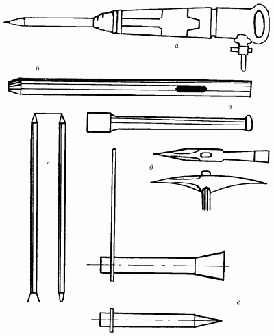
Рис. 75. Инструменты для разборки каменной кладки и пробивки отверстий: а – пневматический молоток; б – шлямбур; в – скарпель; г – лом; д – кирка; е – клин.
– пневматические отбойные молотки и электромолотки;
– шлямбуры;
– кирки;
– скарпель;
– стальной лом;
– клинья;
– перфоратор или дрель.
Круглые отверстия диаметром 30–50 мм пробивают шлямбурами, которые выполняются из стальной трубы, один ее конец имеет зубья пилообразной формы, а другой конец конусообразный.
Для пробивки гнезд и борозд применяют скарпель. При разборке фундаментов используют лом, кирку, клин.
При восстановлении каменной кладки используются те же инструменты, что и при первом ее возведении.
Ручную разборку кладки из кирпича на цементном или известковом растворе низких марок выполняют ломами, кирками, ударяя ими по горизонтальному шву под постель кирпича. Острым концом кирки очищают раствор с кирпича и спускают вниз по закрытым желобам, таким же способом спускают полученный от очистки кирпича щебень. Кладку на прочных цементных растворах разбирают скарпелем или стальными клиньями, забиваемыми ударами кувалды в горизонтальные швы.
Во время разборки бутовой и бутобетонной кладки фундаментов камни выламывают киркой, ломом, клиньями или отбойным молотком. Разборку кладки с помощью клиньев и кувалд лучше всего вести с помощником; в этом случае один направляет в шов кладки держатель, вставленный в клин, другой забивает его в кладку кувалдой.
Ремонт деформированных фундаментовРазрушенные со временем фундаменты заменяют, соблюдая правила безопасности. Работы с фундаментами проводят на небольших участках (1,5–2 м). До подведения фундамента устанавливают маяки в трещинах стен, чтобы проследить за деформируемой частью. Маяки выставляют также в трещинах, расположенных очень близко к месту подведения фундамента. Эти же действия проводят при закладке новых фундаментов вплотную к существующим.
Котлованы роют под новые фундаменты и выкладывают их небольшими участками (до 2 м) с разрывами 2–4 мм, очередность определяется проектом. Начинают работы с разметки стен и их временного закрепления. Если фундаменты заглубляют, то стены укрепляют подкосами (рис. 76).
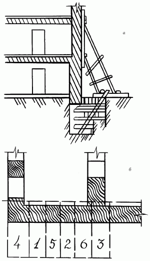
Рис. 76. Подведение нового фундамента под старые стены: а – укрепление стены подкосами; б – последовательность действий.
После этого старый фундамент откапывают, вынимают из-под него грунт на первом участке, а стенки углубления крепят досками. На этом же участке готовят основание под новый фундамент и выводят кладку вплотную к подошве старого фундамента. Подошву старой кладки очищают от грунта и щебня, разрушенную разбирают. Места примыкания старого и нового фундамента закрепляют цементным раствором.
Потеря прочности фундамента происходит по различным причинам:
– использование в процессе возведения фундаментов некачественных или неправильно подобранных по прочностным характеристикам материалов;
– плохое качество строительных работ;
– разрушающее воздействие внешней среды.
Самым распространенным дефектом фундаментов различных конструкций является неравномерное проседание. Это выражается в виде трещин в стенах и в самом фундаменте, различных перекосов дома. В зависимости от конструкции дома и типа фундамента причинами данного дефекта могут быть:
– неправильно выбранная глубина заложения фундамента (чаще всего меньше глубины промерзания). Исправить этот дефект очень трудно, а иногда просто невозможно. В такой ситуации можно подсыпать грунт по всему периметру фундамента, тем самым искусственно увеличив глубину его заложения;
– подъем грунтовых вод. Этот дефект предусмотреть бывает очень сложно, особенно если строительство ведется без участия специалистов. Однако выход можно найти и из этой ситуации: можно организовать дренажные системы или посадить специальные сорта растений, способные эффективно вытягивать влагу из почвы. В главе «Гидроизоляционные работы» даются советы по строительству дренажных систем одновременно с фундаментом;
– неравномерная нагрузка на фундамент самогостроения, например, когда терраса легче основного дома. Этот дефект можно исправить следующим образом: если дом уже построен, нужно разделить фундаменты дома и пристройки, проложив между ними доски, пропитанные битумом или обернутые толем;
– увеличение нагрузки на фундамент за счет надстройки верхних этажей.
Кроме этого, неравномерное оседание фундамента может проявиться:
– вследствие неправильной оценки возможностей старого фундамента. Эта ошибка может привести к очень большим затратам на материалы для возведения нового фундамента и перестройки дома. Можно, конечно же, провести усиление старого фундамента, если сложившиеся обстоятельства это позволят;
– когда неправильно оценена несущая способность грунта. Увеличить ее можно, например, за счет проливки грунта под фундаментом цементным молоком. Однако этот процесс является очень трудоемким и достаточно дорогостоящим;
– из-за недостаточной прочности материалов фундамента или потери ее со временем. Для фундаментов, сложенных из бутового камня или кирпича на известковом растворе, характерно нарушение сцепления раствора и камня. Этот дефект появляется в большинстве случаев вследствие попадания внутрь фундамента влаги, сезонного промерзания и оттаивания, постоянно действующей нагрузки на фундамент со стороны здания.
Для исправления требуется капитальный ремонт: перекладка фундамента или полная его замена новым. Для этого прежде всего необходимо разгрузить старый фундамент путем переноса веса дома на временные опоры-брусья, которые располагают рядом со старым фундаментом. На них с помощью стальных распределительных балок переносят нагрузку, создаваемую домом, после чего приступают к ремонтно-восстановительным работам.
Основные правила при возведении фундаментовПри закладке фундамента любого типа нужно помнить о том, что почти всегда в большинстве фундаментных конструкций применяется бетон, который, в свою очередь, отличается такой особенностью, как период набирания прочности. Обычно он составляет не более 30 дней. Поэтому после заложения бетонной конструкции ее следует выдержать в течение указанного времени без нагрузки. Лучше всего фундаментную конструкцию накрыть в это время любым водонепроницаемым материалом, например рубероидом, для предотвращения пересыхания верхнего слоя. В период схватывания бетона рекомендуется периодически поливать фундамент водой, чтобы не допустить неравномерного высыхания.
Не следует забывать о том, что недавно возведенный фундамент должен постоять некоторое время. Иначе связанные с неправильной выдержкой дефекты проявятся довольно скоро, а быстрота при возведении дома чаще всего оборачивается новыми затратами времени и средств.
При возведении фундаментов следует обратить особое внимание на защиту наружных сторон цоколей от внешних климатических и атмосферных воздействий. Чаще всего эту часть работы делают по окончании строительства или же совсем забывают о ней. Между тем монолитный или кирпичный цоколь прослужит гораздо дольше, если его оштукатурить или облицевать плиткой.
В последнее время в специальную смесь для затирки фундамента принято вносить различные добавки с содержанием резины, например измельченные и расплавленные автомобильные покрышки. Этим составом снаружи обмазывают цоколь. Получившееся покрытие не только декоративно, но и надежно.
При устройстве цоколя предусматривают наличие вентиляционных отверстий: летом они служат для проветривания подпола и подвала, а с наступлением сезонных дождей их закрывают, чтобы влага не попадала в дом.
Отдельно следует позаботиться о правильном сливе дождевой воды с крыши. Казалось бы, с возведением фундамента эта часть строительных работ никак не связана. Однако отсутствие подобного устройства существенно снижает срок службы фундамента, поскольку дождевая вода, попадая с крыши на отмостку, разбивает ее и цоколь, сильно и неравномерно увлажняет грунт вблизи фундамента, что, в свою очередь, сказывается на его несущей способности и в дальнейшем приводит к проседанию фундамента.